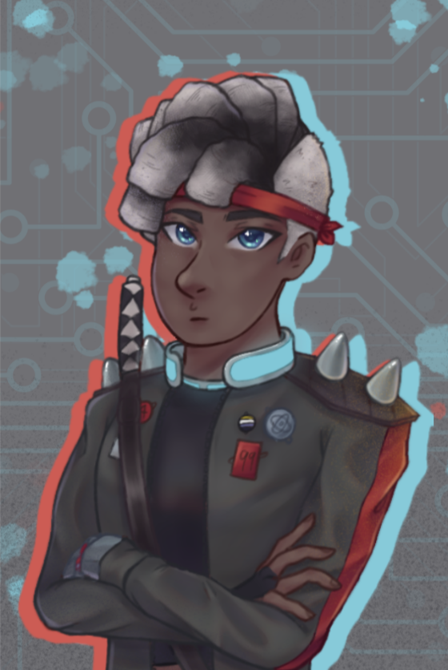

{kind=link}
{kind=link}
{kind=link}

A sketch of another
one of my OCs, Alex
{kind=link}

{kind=link}
My OC KJ from the
Pygame Project
also my current phone screen
I like drawing because it is a release for me, though I don't particularly
like sharing my art because outward influence makes me lose motivation.
For example, if i had to do it for praise or money, it wouldn't be enjoyable
for me anymore. Interestingly enough, I only started drawing consistently for enjoyment
around a year ago; before that I would only draw if I had to.
My motto in art is that I have hands and that's everyone else's problem now.
A sketch of another
one of my OCs, Alex
My OC KJ from the
Pygame Project
also my current phone screen

As you can see, I delve into mainly pencil sketches and digital art, as well as the occasional
realism piece. I'm self-taught in terms of what I mainly draw but in first or second grade I
did attend art classes for watercolour and painting. Long story short, I hated it and dropped out after a bit.
I didn't like being told what to draw or being give time limits. Nowadays, I rarely ink or colour my traditional
sketches because I'm lazy and mostly make digital art when it strikes me (usually at 3am). The only real reason
I do realism pieces is by requests of other people like my dear mother.
In general, when it comes to my art, I tend to be quite a perfectionist, especially if I know I'm going to be sharing
the art. This is why it's more fun and easier for me to stay focused on art I do for myself. This is especially
evident because I easily lose motivation in drawings; I constantly spit out ideas but jump from one project to
the next so fast that I ever only end up finishing one for every 10 I start.
I don't use a lot of fancy materials when I draw and I hold dear the belief that you don't need fancy materials to
make good art. Although any paper can be used for sketching, I use a simple sketchbook to keep everything in one place.
I use a cheap mechanical pencil, which works perfectly fine. For an eraser, I'd recommend a Muji eraser because they
erase cleanly and don't leave smudges. When I do realism and have to shade using pencil, like in the skull sketch,
I use Staedetler sketch pencils and a kneaded eraser. In terms of lineart, I use Micron pens, though any outlining pens
such as sharpie pens will also suffice.
When doing digital art, I work off of my phone, which is a Huawei P30 lite because I can't afford a drawing tablet.
The drawing software I use is IbisPaintX, which is free and should be availible on most devices. Like I said, there
really isn't a need for expensive, top-of-the-line equipment to make good art, though it can certainly make a more
pleasant experience. In my case, i'm perfectly happy drawing for myself with the materials I have.
{kind=link}
{kind=link}
{kind=link}
{kind=link}
{kind=link}
{kind=link}
{kind=link}
{kind=link}
{kind=link}